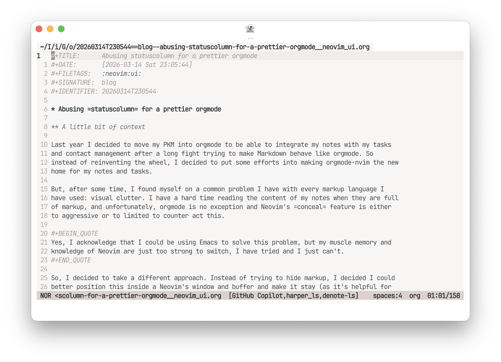
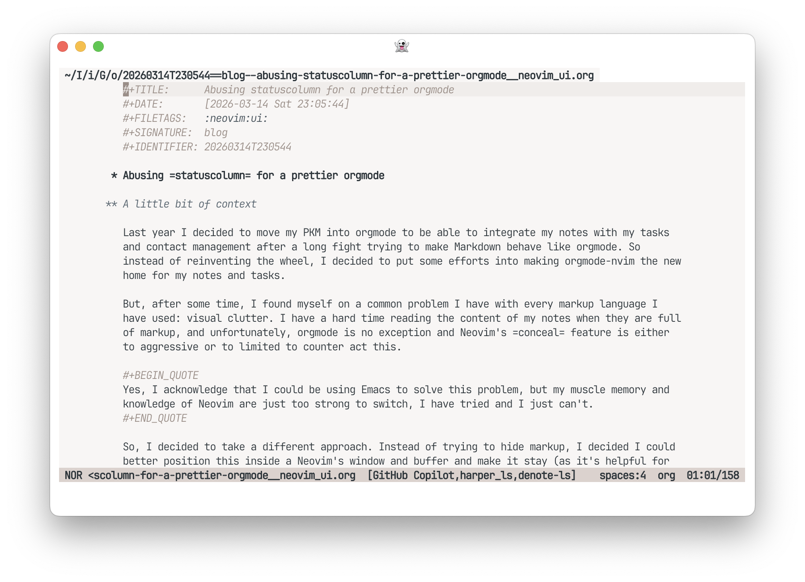

Abusing statuscolumn for
a prettier orgmode
A little bit of context
Last year I decided to move my PKM into orgmode to be able to integrate my notes with my tasks and contact management after a long fight trying to make Markdown behave like orgmode. So instead of reinventing the wheel, I decided to put some efforts into making orgmode-nvim the new home for my notes and tasks.
But, after some time, I found myself on a common problem I have with
every markup language I have used: visual clutter. I have a hard time
reading the content of my notes when they are full of markup, and
unfortunately, orgmode is no exception and Neovim's conceal feature is either to aggressive or to
limited to counter act this. Just look at this:

Yes, I acknowledge that I could be using Emacs to solve this problem, but my muscle memory and knowledge of Neovim are just too strong to switch, I have tried and I just can't.
So, I decided to take a different approach. Instead of trying to hide
markup, I decided I could better position this inside a Neovim's window
and buffer and make it stay (as it's helpful for editing) while the
content of the note is still readable. Inspired in the work of Nicolas
P. Rougier, Emacs hacking legend (just see his work on Reddit,
and GitHub), is that I decided
to abuse UI elements to achieve this. In particular, the markup that
most bothers me is the headlines. Inspired by his org-margin mode
package, I decided to use the statuscolumn
feature of Neovim to display the headlines in a more readable way. Here,
the idea is to "outdent" the headlines into the statuscolumn space and later conceal the header
characters in the main buffer, achieving a much cleaner look while
keeping the editing experience intact.
How to achieve this?
The implementation is pretty straightforward, we just need to define
a function that will be called by statuscolumn and will check if the current line
is a headline, if it is, it will move the headline characters to the
statuscolumn and conceal them in the main
buffer. If you provide a function to statuscolumn, Neovim literally runs said
function over each line, defining the contents to show in the UI
element. This enables us to basically place anything there (with some
restrictions on how long the string can be), so we can exploit this to
achieve our goal.
Although it sounds fairly simple, we can easily run into wanting to add more features to make it cooler, like adding a custom symbol. In my case, I wanted to keep it as true and close to possible to the original orgmode look, but this is just a matter of personal preference and can be easily changed.
Here is the solution I came up with, which combined with some concealing gets me pretty close to perfect:
---@module "plugin.headercolumn"
---@author Carlos Vigil-Vásquez
---@license MIT 2025
-- A small plugin to put header characters on the statuscolumn
local M = {}
---Pad string to left
---@param s string String to pad
---@param l number String length
---@param c string Character to pad with, defaults to space
local function lpad(s, l, c) return string.rep(c or " ", l - #s) .. s end
--- NOTE: the objective of this custom status line is so we can partially conceal the headings stars, such
--- that the stars are placed in the status column, making them stay aligned with the rest of the text.
local function asterisk_count(line_number, maxwidth)
-- Get the content of the specific line
local line = vim.api.nvim_buf_get_lines(0, line_number - 1, line_number, false)[1]
-- Check if line has header of any level
if line then
local asterisk_pattern = "^%*+ "
local asterisks = line:match(asterisk_pattern)
if asterisks then
local count = #asterisks - 1
return "%#@org.headline.level"
.. count
.. "#"
.. lpad(string.rep("*", count --[[@as number]]), maxwidth, " ")
.. "%*"
end
end
end
function M.setup(width)
local ns_id = vim.api.nvim_create_namespace("headercolumn")
vim.api.nvim_buf_clear_namespace(0, ns_id, 0, -1)
local function add_conceal(bufnr)
local lines = vim.api.nvim_buf_get_lines(bufnr, 0, -1, false)
for i, line in ipairs(lines) do
local start, end_col = line:find("^%*+ ")
if start then
vim.api.nvim_buf_set_extmark(bufnr, ns_id, i - 1, start - 1, {
end_col = end_col,
conceal = "",
})
end
end
end
-- Initial conceal
add_conceal(0)
-- Update conceal on buffer change
vim.api.nvim_create_autocmd({ "TextChanged", "TextChangedI" }, {
buffer = 0,
callback = function() add_conceal(0) end,
})
-- Set statuscolumn
_G.headercolumn_stc = function()
local components = {
" ",
asterisk_count(vim.v.lnum, width - 2),
" ",
}
return table.concat(components, "")
end
vim.api.nvim_set_option_value(
"statuscolumn",
"%{%v:lua.headercolumn_stc()%}",
{ scope = "local" }
)
end
return MThe great reveal (don't get too excited, it's just a small tweak):

So how does this work? The script has two main parts, the setup function, which (well) setups up the
header character "outdenting", and the asterisk_count function, which is responsible
for counting the number of asterisks in the headline and returning the
appropriate string to be displayed in the statuscolumn.
Is this perfect? No, but it gets me pretty close to what I would
like. The only missing piece for me is to be able to add some kind on
concealing over the Orgmode keywords (those #+... lines you see in the screenshots).
Conclusion and current status
Is this revolutionary? I don't think so, but this achieves a level of
readability that I find very pleasant, which was the whole point of this
exercise. Modifying this to make it work in other markup languages
should be pretty straightforward, as you just need to change the patter
detected as a headline and the highlight group used to display it in the
statuscolumn. Heck, you could even go
overboard and use a tree-sitter query to detect the headlines, extract
all the markup from them and display it in the statuscolumn (something I tried but failed so
miserably that I promised myself to stop over engineering this small
tweaks if they work).
I have been using this for I think almost a year now and I am pretty
happy with the results. It has made my notes much more readable and I
don't miss the original look of orgmode at all (i find it weird when, in
the rare case, Neovim shows me orgmode in its original form). The best
part is that it is pretty easy to maintain and tweak if I want to change
something in the future or if I get a new idea to make it even better. I
have recently been playing with adding back relative line numbers to the
statuscolumn (something I use regularly
for coding and other markup languages) but I yet to find a good way to
do it without making it too cluttered.
If you are interested in the code, you can either check out my Neovim config or this Gist.